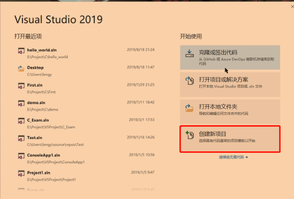

C语言–学习笔记(包含C语言视频、C Primer Plus书籍)
Lesson1 C语言概述
NO1.1 C语言简介
1972年，贝尔实验室的丹尼斯·里奇(Dennis Ritch)和肯·汤普逊(Ken Thompson)在开发UNIX操作系统时设计了C语言，而C语言是在B语言的基础上进行设计的。
- C语言的特点：运行的高效性(C语言程序紧凑、运行速度很快)、可移植性(移植到别的平台时，几乎不用改什么代码)、强大而灵活(如，UNIX大部分是用C写的)等等。
- C语言的应用范围很广：游戏开发、嵌入式软件开发、操作系统等等。
NO1.2 语言标准
美国国家标准协会(ANSI)于1983年组建了一个委员会，开发了一套新标准，并于1989年正式公布。
- ANSI C标准定义了C语言和C标准库。国际标准化组织于1990年采用了这套C标准(ISO C)。ISO C和ANSI C是完全相同的标准。ANSI/ISO标准的最终版本通常叫作C89或C90。1994年，发布了C99标准。而在2011年12月8日，发布了C11标准。
NO1.3 C语言的编程机制
C编程的基本策略是：用程序把源代码文件转换为可执行文件(其中包含可直接运行的机器语言代码)。
编程机制：
用C语言编写程序时，编写的内容被储存在文本文件中，该文件被称为源代码文件；
编译器把源代码转换成中间代码，可因为中间文件有多种形式，我们在这里描述的是最普遍的一种形式，即把源代码转换为机器语言代码，虽然此时目标代码文件里包含了机器语言代码，但仍然不是一个完整的程序，所以还不能直接运行；
目标代码文件缺失启动代码，启动代码充当着程序和操作系统之间的接口，系统不一样，需要的启动代码也是不一样的；
目标代码还缺少库函数，几乎所有的C程序都要使用C标准库中的函数；
最后，链接器把你编写的目标代码、系统的标准启动代码和库代码这三部分合并成一个文件，即可执行文件。对于库代码，链接器只会把程序中要用到的库函数代码提取出来。
NO1.4 VS2019的安装和第一个C程序
目前主流的C语言集成开发环境，有Visual Studio 2019等等，这里是从VS2019。
我们到VS2019官网去下载最新版本的即可。
注意：常用的注释快捷键为ctrl+k+c，取消注释的快捷键为ctrl+k+u。说明：一般，Community版本就够我们个人使用了，其他两个版本需要购买并激活才能使用。说明：下载后，选择自己要安装的版本即可。说明：一般选择图中的Windows平台开发和C++的桌面开发就可以了，其他的默认即可，不需要改动什么。
说明：中间的下载缓存里，那个“安装完成后保留下载缓存”选项一定要打勾，否则会出BUG。
说明：下载完成后，打开VS2019，选择创建新项目。说明：选择Windows桌面向导。说明：添加项目名称，以及项目的工作空间，最后点击创建。说明：选择控制台应用程序，并勾选功空项目即可。说明：点击工具，选择选项，分别在文本编辑器、命令窗口、输出窗口中将字体根据自己的偏好设置一下就可以了。说明：在右侧窗口，找到源文件，右键添加，选择新建项。说明：在弹出的对话框中，选择C++文件，在起名的时候，使用.c后缀名即可，就可以成功创建C文件了。注意：使用快捷键Ctrl+s保存文件内容，使用Ctrl+F5运行文件。说明：如果出现错误，勾选“不再显示次对话框”，并点击否。
第一个简单的C程序。
例如：
#include<stdio.h> //#include这是预处理指令，该行告诉编译器把stdio.h中的内容都输入到该行所在的位置，相当于粘贴复制操作；所有C编译器软件都提供了stdio.h文件，该文件提供键盘输入和屏幕输出的函数(如，printf_s()函数等)，所以这个文件是标准的输入/输出头文件 int main(void){ //main函数总是第一个被调用的函数，函数是C程序的基本模块；void表示main()函数不带任何参数 int num = 1; //声明一个变量，但是要注意变量名称不能太长，C99的标准允许使用更长的变量名，但编译器只能识别前63个字符，超出就识别不了了；变量名不能以数字开头，但可以用小写字母、大写字母、数字和下划线来命名 printf_s("这是我使用VS2019创建的第一个C文件，hello world!!!!\n"); //printf_s()是一个函数；“\n”表示换行的意思 return 0; //返回值，就是将0返回给系统 } //---------------------------------- 一个简单的C语言程序基本语法格式： #include<stdio.h> int main(void){ 语句 return 0; }
Lesson2 C语言基础
NO2.1 转义字符
转义字符一般以“\”开头，目的是为了转义“\”后面跟的符号。
- 常用转义字符：
\t：表示水平制表，说白了就是让输出的代码有个间隔的意思。如，printf_s("你\t好\t啊")，原本输出结果：你好啊；现在输出：你 好 啊，中间多了空格；\n：表示换行的意思。如，printf_s("你好\n啊")，原本输出：你好啊；现在输出：“你好”两个字占一行，“啊”字又占了一行；\\：表示输出一个“\”。如，printf_s("你好\\\啊")，原本输出：你好啊；现在输出：你好\啊；\"：表示输出一个“””。如，printf_s("你好\"啊")，原本输出：你好啊；现在输出：你好"啊；\'：表示输出一个“’”。如，printf_s("你好\\'啊")，原本输出：你好啊；现在输出：你好'啊；\r：表示将光标移动到本行的开头。如，printf_s("你好\r啊")，原本输出：你好啊；现在输出：啊好，也就是原本输出到你好，然后又回到本行开头打印”啊“，所以”啊“把”你“字覆盖了。
NO2.2 注释、语句、表达式
用于解释说明代码的文字就叫做注释。注释也可以用于代码，但是注释的代码不会被编译器执行。
注释分两种：
单行注释：
- 基本语法格式：
//需要注释的文字。如，//这是单行注释；
- 基本语法格式：
多行注释：
- 基本语法格式：
/* 需要注释的文字 */。如，/*这里是多行注释*/。
- 基本语法格式：
表达式和语句：
表达式：由运算符和运算对象组成。运算对象可以是常量、也可以是变量；每个表达式都有一个值；最简单的表达式是一个单独的运算对象。
如，6、-4等等；语句：是C程序的基本构建块。一条语句相当于一条完整的指令。语句一般以分号结尾。最简单的语句是空语句：
;，也就是一个分号。例如：
8; 3+4; //以上这些都是语句，但不算真正有效的语句，因为什么也没做
NO2.3 标准库
标准库其实就是一些写好了的函数所组成的文件。
- C语言中常用的标准库有：
- <asset.h>：设定插入点；
- <ctype.h>：字符处理；
- <errno.h>：定义错误码；
- <float.h>：浮点数处理；
- <limits.h>：定义各种数据类型最值常量；
- <locale.h>：定义本地化函数；
- <math.h>：定义数学函数；
- <stdlib.h>：定义杂项函数及内存分配函数；
- <stdio.h>：定义输入／输出函数；
- <string.h>：字符串处理；
- <time.h>：定义关于时间的函数；
- ….等等。
NO2.4 变量和常量
C语言中需要用东西来承载数据。
变量和常量：
变量(variable)：
定义：就是在程序运行过程中，内部存储的值，随时可以被改变的一段内存地址空间；
基本语法基本语法格式：
数据类型 变量名 = 数据值。注意：变量必须先声明，再使用；在同一个程序中，变量名不允许相同，不能使用C语言的的关键字；变量名只能用字母或下划线开头，其它字母可以是字母、数组和下划线(除了下划线，不允许有其他特殊字符)。例如：
include<stdio.h> int main(void){ ... int num = 8; //声明一个int类型的变量num char c = 'a'; //声明一个char类型的变量c ... }
常量(constant)：
定义：就是在程序运行过程中，所表示的值，无法被改变的量；
基本语法基本语法格式，有两种：
使用C预处理器声明常量(即程序在进行预编译处理时就生效)：只要在程序的顶部，添加代码：
#define 大写常量名 值，推荐使用该方式声明常量；如果想要取消定义的常量，并重新定义常量，使用：undef 大写的常量名，就可以重新定义常量的值了；注意：定义字符常量用单引号，定义字符串常量用双引号；该方式定义常量只是简单的替换。使用const修饰变量(即在程序编译、运行时才生效)：
const 变量名 = 值，一旦被第一次赋值之后，那么该变量就变为只读，不能再更改值，也就变成常量了。例如：
include<stdio.h> #define AGE 8 //定义了一个常量AGE，值为8，这样程序中所用的同名常量都会被替换成指定的值 #undef AGE //取消定义AGE常量 #define AGE 10 //重新定义AGE常量 #define NAME 'JOHN' //定义了一个字符常量 #define ADDRESS "CHINA" //定义了一个字符串常量 int main(void){ ... const int num = 1; //使用关键字const声明int类型的常量 ... }
limits.h头文件中和float.h头文件中，提供了一些整数类型和浮点数类型使用的常量；(了解即可)
- 位、字节和字的关系。
- 位(bit)：最小的存储单元，可以储存0或1；
- 字节(byte)：是常用的计算机存储单位。对于几乎所有的机器，1个字节 = 8位，即1 byte = 8 bit，这是字节的标准定义；
- 字(word)：是设计计算机时给定的自然存储单位。不同位系统中，字所占的位数也不同：
- 在16位的系统中(比如8086微机)，1字(word) = 2字节(byte) = 16(bit)；
- 在32位的系统中(比如win32)，1字(word) = 4字节(byte) = 32(bit)；
- 在64位的系统中(比如win64)，1字(word) = 8字节(byte) = 64(bit)。
NO2.5 数据类型
C语言让程序员针对不同情况选择不同的数据类型。
- C语言中的数据类型主要分为以下几种：
- 基本类型：它们是算数类型，包括整数类型和浮点类型；
- 枚举类型：它们是算数类型，被用来定义在程序中只能赋予其一定的离散整数值的变量；
- void类型：void表明没有可用的值；
- 派生类型：包括：指针类型、数组类型、结构类型、共用体类型和函数类型。
- 整型(以32位或64位系统为标准，不含小数点和指数的数称为整数)。
注意：signed表示有符号的类型，unsigned表示无符号类型，优先考虑使用无符号类型的数据类型；当超出了数据类型的最大值，那么重新从最小值开始计算。如，int num = 2147483647 + 1，num的结果为-2147483648，而不是2147483648，因为结果已经超出了int的最大范围，就重新回到int最小值开始算，其他数据类型也是同理。- char：1个字节，范围是0~255，很奇怪为什么char是整型的一种是吗？那是因为在ASCII码表中，所有的字符都可以转为整型，且char也可以是字符；ASCII表中，字符0对应的十进制为48，’A’为65，’a’为97；
- unsigned char：1个字节，范围是0~255；
- signed char：1个字节，范围是-128~127；
- short(也叫short int、signed short、signed short int)：2个字节，范围是-32768~32767；
- unsigned short(也叫unsigned short int)：2个字节，范围是0~65535；
- int(也叫signed、signed int)：4个字节，范围是-2147483648~2147483647；推荐使用int；
- unsigned int(也叫unsigned)：4个字节，范围是0~4294967295，只能用于非负值；
- long(也叫long int、signed long、signed long int)：4个字节，范围是-2147483648~2147483647；使用后缀l或L表名是long类型，推荐使用L；
- unsigned long(也叫unsigned long int)：4个字节，范围是0~4294967295；
- long long(也叫long long int、signed long long、signed long long int)：8个字节，范围为-9223372036854775808~9223372036854775807；
- unsigned long long：8个字节，范围是0~18446744073709551615。
- 浮点类型。
注意：浮点型常量，可以没有小数点或指数部分，但是不能同时省略两者，如2e5、19.88等等；也可以没有小数部分或整数部分，但是不能同时省略两者，如，3.e16、.45e-16等等。- float：4个字节，范围是1.2E-38~3.4E+38，精度为6位小数。如，33.123456；使用f或F后缀，声明浮点型是float类型；
- double：8个字节，范围是2.3E-308~1.7E+308，精度为15位小数。默认情况下，创建的浮点型都是double类型的；输出时，默认保留小数点后面6位；
- long double：精度比double更高，但是C中只保证是15位小数。
- 布尔类型(
即C99添加的_Bool类型)。注意：头文件<stdbool.h>中定义了用bool来表示C99添加的_Bool类型。- true：可用1表示true；
- false：可用0表示false。
- 复数类型和虚数类型。
- 复数类型：
- float_Complex；
- double_Complex；
- long double _Complex。
- 虚数类型：
- float_Imaginary；
- double_Imaginary；
- long double _Imaginary。
- 复数类型：
NO2.6 数据类型转换
C语言中如果使用不同类型进行运算，会进行数据类型的转换。
数据类型转换分为两种：
自动类型转换：在表达式中，精度小的数据类型会被自动转为精度大的数据类型。
如，一般char和short都会被自动转成int；基本语法格式：代码工具会自己识别并进行自动类转换；
例如：
char a = 'a'; int b = a; //这里自动将char转换成了int
强制类型转换：即表达式中，精度大的数据类型要转为精度小的数据类型，就需要使用强制数据类型转换；
基本语法格式：
(数据类型) 需要强制类型转换的值。例如：
long a=100; int b = (int)a; //这里将long类型的变量a强制转换成了int类型的变量
注意：当表达式中有多个不同数据类型的操作数进行运算时，会自动转为精度最大的那个数据类型，再进行运算。
数据类型的级别从高至低依次是：long double –> double –> float –> unsigned long long –> long long –> unsigned long –> long –> unsigned int –> int。之所以short和char类型没有列出，是因为它们已经被升级到int或unsigned int。
- 当作为函数的参数进行传递时，char和short会被转换成int，float会被转换成double。
NO2.7 获取地址值：&运算符
在C语言中，&运算符有多种作用。
- &运算符的作用：
- 取地址：用于变量前面；
- 基本语法基本语法格式：
&变量名。如，int a，&a就表示变量a在内存中的地址值；
- 基本语法基本语法格式：
- 与操作符：用于二进制位的与运算，两个操作数的二进制，对位都为1，则与运算的值为1，否则为0。
- 取地址：用于变量前面；
NO2.8 指针入门
指针：其实就是内存地址；而指针变量，则是能够存储指针的变量，说白了指针变量存储的是地址值。
指针变量：用来存储指针的变量。和普通变量的定义差不多，只不过要在变量名前多加一个“
*”号即可，通常在星号和变量名之间空一格，但是星号与数据类型之间的空格可有可无。注意：指针变量前面的类型，跟其里面要存放的地址值所指向的数据的类型一致；如果在初始化指针变量的时候不确定值，那么可以先赋值一个NULL，赋值为NULL的指针称为空指针，NULL常量定义在<stdio.h>文件中：#define NULL 0。例如：
int a; //int* p = &a; //*号与数据类型的之间的空格可有可无，都可以的 int* p = &a; //这里定义了一个int类型的指针变量p(因为里面存放的int类型的变量a的地址值)，然后将变量a的地址值赋值给了指针变量p
“*”号的使用：
放在变量前面可以声明这是一个指针变量；
“*”号还可以用在指针变量前面，将指针变量里内存地址取出来，然后将这个地址值所指向的值取出来，此时星号和指针变量之间不空格。
例如：
#include<stdio.h> int main(void) { int b = 1; //定义一个普通的变量1，是int类型的 int* bz; //定义一个指针变量bz，也是int类型的，用于存储变量b内存地址 bz = &b; //获取变量b的内存地址，并赋值给指针变量bz printf_s("%d\n",bz); //打印指针变量，结果为变量b的内存地址 printf_s("%d", *bz); //打印解指针变量，也就是指针变量bz的值(也就是内存地址)所指向的值，结果为1 return 0; }
NO2.9 值传递和地址传递
C语言中参数的传递，分为两种：一是值传递，也就是说传递的是值；二是地址传递，说白了传递的是一个地址值。
- 值传递的数据类型有：
- 基本数据类型：整型类型、小数类型、字符类型；
- 结构体类型(你可以理解为Java语言中的类)；
- 共用体类型。
- 地址传递的数据类型：
- 指针；
- 数组。
NO2.10 运算符
C的常用运算符类型包括：算术运算符、赋值运算符、关系运算符、逻辑运算符、位运算符、三元运算符以及其他运算符等等。注意：运算符优先级：有括号先括号，然后正负号，之后先乘除、后加减，最后赋值；即括号>正负号>乘除>加减>赋值。
- 算数运算符：
- 加法运算符：
+；- 基本语法格式：
值 + 值，这里的值可以是常量，也可以是变量。如，1+1、a+1(前提这里a要记得先赋值再使用，且是数值类型)；
- 基本语法格式：
- 减法运算符：-；
- 基本语法格式：
值 - 值，这里的值可以是常量，也可以是变量。如，5-3、a-1(前提这里a要记得先赋值再使用，且是数值类型)；注意：“-”除了当作减号之外，还可以当作负号使用，如，-12、-a等等。
- 基本语法格式：
- 乘法运算符：
*；- 基本语法格式：
值 * 值，这里的值可以是常量，也可以是变量。如，52、a3(前提这里a要记得先赋值再使用，且是数值类型)；
- 基本语法格式：
- 除法运算符：
/；- 基本语法格式：
值 / 值，这里的值可以是常量，也可以是变量。如，5/2、a/3(前提这里a要记得先赋值再使用，且是数值类型)；注意：两个操作数都是整数，则结果为整数；若有一个操作数为浮点数，则结果为浮点数。如，5/2 = 2、5.0/2 = 2.5等等。
- 基本语法格式：
- 求模运算符(也叫取余运算符)：
%；- 基本语法格式：
值 % 值，这里的值可以是常量，也可以是变量。如，5%2、a%2(前提这里a要记得先赋值再使用，且是数值类型)。注意：其实取模运算可以看做是：a % b = a - a / b b。
- 基本语法格式：
- 加法运算符：
赋值运算符：
赋值运算符：=；这是赋值运算符，而不是等于号；
- 基本语法格式：
变量名 = 值。如，int num = 1，表示把1赋值给num；
- 基本语法格式：
其他赋值运算符：
+=、-=、*=、/=、%=。+=运算符就是将值相加后又赋值，其他运算符同理。基本语法格式：
值 +=或-=或*=或/= 值。例如：
num += 20 与 num = num + 20 相同 num -= 2 与 num = num - 2 相同 num = 2 与 num = num 2 相同 num /= 2.5 与 num = num / 2.5 相同 num %= 3 与 num = num % 3 相同
关系运算符(也称为比较运算符)；
注意：C99提供了stdbool.h头文件，该头文件规定bool成为_Bool的别名，且把true和false分别定义为1和0；关系运算符常常和关系表达式一起使用，而关系表达式的值，要么为true，要么为false(即0或1，所以就有了0是false，1是true转换)。例如：
#include<stdio.h> int main(void){ int num = 3; while (num) { printf_s("%d\n", num); num--; } } 说明：只要num的值不为0，即不为false，那么while会一直循环，直到num的值为0，也就是false。
逻辑运算符：
如下图所示；
注意：!运算符的优先级很高，比乘法运算符还高，与递增运算符的优先级相同，只比圆括号的优先级低。另外iso646.h头文件中，可用英文单词代替逻辑运算符，分别是and、or、not。说明：当且仅当exp1和exp2都为真时，exp1 && exp2才为真； 如果exp1或exp2为真，则exp1 || exp2为真； 如果exp1为假，则!exp1为真；如果exp1为真，则!exp1为假。
位运算符：
&(位与运算)、|(位或运算)、^(位异或运算)、~(按位取反运算)、<<(左移运算)、>>(右移运算)这些运算都是使用操作数的二进制补码进行运算的。
例如：
3的二进制：0x11 4的二进制：0x100 3 & 4 (&位与运算：有0则0，两1为1)： 00000000 00000000 00000000 00000011 ---3的二进制补码 & 00000000 00000000 00000000 00000100 ---4的二进制补码 ----------------------------------------- 00000000 00000000 00000000 00000000 结果为0 3 | 4 (|位或运算：有1则1，两0为0)： 00000000 00000000 00000000 00000011 ---3的二进制补码 | 00000000 00000000 00000000 00000100 ---4的二进制补码 ----------------------------------------- 00000000 00000000 00000000 00000111 结果为7 3 ^ 4 (^位异或运算：相同则0，不同则1)： 00000000 00000000 00000000 00000011 ---3的二进制补码 ^ 00000000 00000000 00000000 00000100 ---4的二进制补码 ----------------------------------------- 00000000 00000000 00000000 00000111 结果为7 ~ 3 (~按位取反运算：0变1，1变0)： ~ 00000000 00000000 00000000 00000011 ---3的二进制补码 ----------------------------------------- 11111111 11111111 11111111 11111100 补码：11111111 11111111 11111111 11111100 反码：11111111 11111111 11111111 11111011 原码：10000000 00000000 00000000 00000100 ---结果为-4 //----------------------------------------------------------- 10 << 2 = 40 10 >> 2 = 2 -1 >> 2 = -1 说明： 正数的原反补都是一样的，所以可以直接乘以或除以n个2，即<<2表示乘以两个2，>>2表示除以两个2；也可以转成原码后进行左移或右移位数操作；负数则需要转换成补码后再进行运行，<<n表示二进制补码向左移动n位，位数不够的地方补0；>>n则是向右移动n位，符号位补1，其他补0。
三元运算符：
基本语法格式：
判断表达式?表达式1:表达式2，判断表达式如果符合条件就取表达式1，否则就取表达式2。例如：
1+1>3 ? 1:2 //结果为2
其他运算符：
sizeof运算符：返回一个对象或类型所占内存字节数，返回的是size_t类型(其实就是unsigned int)，即无符号整数。
- 基本语法格式：
sizeof(数据类型或对象)。如：char ch[10]，sizeof(ch) = 10，返回的是size_t类型的值，也就是字符数组ch所占内存的字节数。
- 基本语法格式：
自增和自减运算符：
++和--，作用是对自身的值进行加1或减1，分两种使用情况：单独使用情况下，自增或自减运算符放在值的前面或后面都一样；
与其他运算符一起使用，++a(出现在值前面)和a++(出现在值后面)，前者先自增再作运算，后者是先运算后赋值；自减和自增一样，只是不是增加而是减少。
例如：
int a = 1; printf_s("%d",a++); printf_s("%d",++a); //上面两者的效果都是一样的 //-------------------------------------- int a = 0; while (++a < 3){ //先自增，后与3进行比较 ... } while (a++ < 3){ //先与3进行比较，后自增 ... }
NO2.11 标识符
所谓标识符，可以简单理解为取名字，即给变量、函数、常量等等取的名字都成为标识符。
- 标识符命名规则：
- 由26个英文字母的大小写、0~9、_或$组成；
- 不可以以数字开头；
- 不可以是C语言中的关键字(即在C中有特殊含义的名称)和保留字，但能包含关键字于其中；
- 不允许包含空格；
- 区分大小写，长度无限制；
- 尽量遵循驼峰命名法。
如，myName、getNumOfNumber等等。
- 所有宏定义(即define)、枚举常数、常量全用大写字母命名，用下划线_分割单词，且记得初始化变量后再使用。
如，#define AGE 8、const double FREE_MONEY = 100.1等等。
C语言的关键字和保留字，如下图所示：
说明：粗斜体是C11新增的关键字。
NO2.12 printf()和scanf()，以及C语言的转换说明
printf()函数和scanf()函数能让用户可以与程序交流。注意：printf_s()和scanf_s()是printf()和scanf()的更安全的写法....微软公司整的。
printf_s()和scanf_s()函数，称为输入/输出函数，简称I/O函数。
printf_s()：
定义：该函数用于向用户输出信息；
函数的调用方式：
printf_s(转换说明字符串,待打印项1,待打印项2,...)。注意：转换说明字符串中的转换说明一定要与后面的每个待打印项相匹配，否则会报错；另外printf_s()函数是有返回值的，返回值为打印的字符的个数，一般不常使用。例如：
printf_s("i am %s","john") printf_s("it is %d%%",12) //这里%d后面使用了两个%%，是因为我想输出12%，所以要使用另一个%来转义前一个%，就成了%%
scanf_s()：
定义：该函数用于获取用户的输入；
函数的调用方式：
scanf_s("%用户的输入所属的数据类型",用于接收用户输入的变量名)。注意：如果用scanf_s()读取基本变量类型的值，在变量名前要加上一个“&”；如果把字符串读入到字符数组，则变量名前面不需要加“&”。例如：
char arr[10]; //声明一个字符数组 scanf_s("%s",arr); //接收用户输入的字符串，并将该字符串放入字符数组中，C中没有用于专门接收字符串的数据类型，只能用字符数组接收
转换说明：
定义：用来说明输入输出时的基本语法格式。
转换说明的意义：把给定的值转换成某种我们要求的形式并打印出来。常用的C语言中转换说明，如下图所示；另外还可以打印八进制、十进制等等。
变量或常量的八进制、十进制、十六进制的显示。
以八进制显示数值：使用“%o”，如果要显示进制的标识符号的话要使用“%#o”，其实就是八进制数值前面加个标识符号0。如，0123、046等等，都是八进制数；
以十进制显示数值：使用“%d”。如，15、20等等都是十进制数，我们常用的数字就是十进制数；
以十六进制显示数值：使用“%x”，如果要显示进制的标识符号的话使用“%#x”或“%#X”，这两个前缀的区别是“0x”和“0X”，都表示十六进制。
例如：
#includ <stdio.h> int main(void){ int x = 100; printf_s("dec = %d; octal = %o; hex = %x\n", x, x, x); printf_s("dec = %d; octal = %#o; hex = %#x\n", x, x, x); return 0; } 以上输出结果为： dec = 100; octal = 144; hex = 64 dec = 100; octal = 0144; hex = 0x64
使用字段宽度“*”，这个符号表示，让上下文来指定字符宽度，什么意思呢，就是让程序里的某个变量来指定字符宽度，那么啥又是字符宽度呢，说白了就是要展示给你看的字符的间隔而已。
例如：
#include<stdio.h> int main(void){ int width = 9; //字段宽度我们用width来表示 int res; scanf_s("%d",&res); //获取用户输入 printf_s("%*d%*d",width,res,width,res); return 0; } 说明：%*d中，%d表示转换说明，*表示字符宽度；如果转换说明是%*d,那么参数列表中应包含*和d对应的值，而d从用户输入中获取，并赋值给了res；字段宽度，我们使用了width变量的值(也就是9)，所以输出结果： 1 1。
NO2.13 C语言中的进制
C语言中常用的进制有：二进制、八进制、十进制、十六进制。
- 进制：
- 定义：即一个数的表示。可以有二进制、八进制、十进制、十六进制等等；
- 常用进制：
- 二进制：由0和1组成，满2进1，C中没有能标识二进制的方法；
- 八进制：由0-7组成，满8进1，C中以数字0开头表示八进制；
- 十进制：由0-9组成，满10进；
- 十六进制：由0-7、a-f(或A-F，表示10-15)组成。C中以0x或0X开头表示十六进制。
进制转换：
在学习常用进制转换之前，我们先来学习一些传说中的8421码：
8421码：表示每个二进制位上的值对应十进制中的值。其实用于二进制和十进制的快速转换。如下所示：
二进制 1 1 1 1 1 1 1 1 十进制 128 64 32 16 8 4 2 1`
二进制转八进制、十进制、十六进制：aaa
二进制转八进制：三位归并法：每三位一组，不够位数的左边添0，求出每个三位的二进制值，最后结果拼接即可；注意：该方法同样适用于八进制转二进制，只需逆向将一个八进制拆成三位的二进制即可，前提是需要明白8421码的转换；
其他进制转十进制(包括二进制转十进制)：每一位上的数据值进制(二进制乘以二，八进制乘以八，十六进制乘以十六)^从右往左且幂从0开始；
二进制转十六进制：四位归并法：每四位一组，不够位数的左边添0，求出每个四位的二进制值，最后结果拼接即可。注意：该方法同样适用于十六进制转二进制，只需逆向将一个十六进制拆成四位的二进制即可，前提是需要明白8421码的转换。
例如：
二进制转换成十进制： 二进制数01110101 0 1 1 1 0 1 0 1 02^7 12^6 12^5 12^4 02^3 12^2 02^1 2^0=1 0 64 32 16 0 4 0 1 把所有的结果相加，得到最后的结果117。其他进制转十进制只需要将2换成8、16即可 //------------------------------------------------------------------ 二进制0b1100110转八进制： 001 100 110 1 4 6 = 0146 //------------------------------------------------------------------ 二进制0b1100110转十六进制： 0110 0110 6 6 = 0x66
八进制转二进制、十进制、十六进制：
- 八进制转二进制：采用8421码，即一个八进制位转换为3个二进制位；
注意：这里不懂8421码的话，可以找一些视频来看，比较简单。 - 其他进制转十进制(包括八进制转十进制)：每一位上的数据值进制(二进制乘以二，八进制乘以八，十六进制乘以十六)^从右往左且幂从0开始；
- 八进制转十六进制：先转成二进制或十进制，再转成十六进制即可。
- 八进制转二进制：采用8421码，即一个八进制位转换为3个二进制位；
十进制转其他进制：直接用这个数除以进制数(二进制除以二，八进制除以八，十六进制除以十六)，直到商为0，取余数反转即可；
十六进制转二进制、八进制、十进制：
- 十六进制转二进制：采用8421码，即一个十六进制位转换为4个二进制位；
- 十六进制转八进制：先转成二进制或十进制，再转成八进制即可；
- 十六进制转十进制：其他进制转十进制(包括十六进制转十进制)：每一位上的数据值进制(二进制乘以二，八进制乘以八，十六进制乘以十六)^从右往左且幂从0开始。
NO2.14 原码、反码、补码
计算机中所有的数据运算都采用补码进行的。对于有符号的数(即负数)而言，二进制的的最高位为符号位：0表示正数、1表示负数。
- 正数的原、反、补码都是一样的，即正数的二进制既是原码，又是反码和补码。
负数：
原码：就是二进制本身，但符号位用0或1分别表示正数或负数；
反码：符号位不变，其他位取反(0变1,1变0)；
补码：在反码的基础上末位加1。
例如：
+7 和 -7 二进制为：00000111 +7 的原码为00000111 -7 的原码则为10000111 //------------------------------------------------------------------ +7 的原码为00000111，反码也是00000111 -7 的原码为10000111，反码则是11111000 //------------------------------------------------------------------ +7 的原码为00000111，反码也是00000111，补码仍然为00000111 -7 的原码为10000111，反码则是11111000，补码变成11111001
NO2.15 程序流程控制
C语言中的程序流程控制：即用来控制程序的流程走向。包括三大流程控制：顺序控制、分支控制、循环控制。
顺序控制：即程序代码从上到下，逐行顺序执行，中间没有任何判断和跳转。
基本语法格式：
例如：
void main(){ int num = 1; //先执行这个 int age = 2; //再执行这个 }
分支控制：即让程序代码有选择的执行，但只会执行其中的一种分支。
注意：分支可以相互嵌套，但最多不要嵌套超过3层，否则代码可读性会大大降低。分支控制主要分为：单分支：即if语句，只有一个选择分支，符合条件则执行分支里的语句体，否则就跳过不执行，继续往下执行；
基本语法格式：
例如：
if(条件表达式){ //条件表达式中只返回true或false，前者进入分支并执行语句体，后者不进入分支执行语句体，即跳过不执行 需要执行的语句体 } 如： int a = 2 if(a > 0){ printf_s("a大于0哦"); } 输出结果为：a大于0哦
双分支：即if-else语句，用于两种情况的选择，即符合与不符合条件的情况，将执行不同的语句体；
基本语法格式：
例如：
if(条件表达式){ //为true走这里 需要执行的语句体1 } else{ //为false时走这里 需要执行的语句体2 } 如： int a = -2; if(a > 0){ printf_s("a大于0哦"); }else { printf_s("a小于0哦"); } 输出结果为：a小于0哦
多分支：即if-else if-else语句，用于多种情况的的选择；
基本语法格式：
例如：
if(条件表达式1){ //符合条件1就进入这里 需要执行的语句体1 } else if(条件表达式2){ //符合条件2就进入这里 需要执行的语句体2 } ....{ .... }else{ 上面两种都不符合，就会执行这里 } 如： int a = 0; if(a > 0){ printf_s("a大于0哦"); } else if(a = 0){ printf_s("a等于0哦"); } else { printf_s("a小于0哦"); } 输出结果为：a等于0哦
其他分支：即switch语句，用于匹配多重选择的情况。
基本语法格式：
例如：
switch(整数值){ //这里的整数值也可以由一个表达式产生，也可以是枚举类型。如1+1，'a'等等 case 常量值1: //switch中的表达式产生的值，如果与这里的值1匹配成功的话，那么就会执行限免的语句体1 需要执行的语句体1 break; //表示中断，意思就是分支程序执行到这里，那么分支就执行完毕了，可以跳出分支，进行分支外的代码执行 case 常量值2: 需要执行的语句体2 break; .... default: 都不符合时，才执行的语句体 }
循环控制：即让程序的代码能够实现循环的执行。
注意：循环也可以嵌套使用，但是只建议嵌套循环不超过3层，否则代码的可读性就会变差。可以分为：for循环：一般用于有次数限制的条件循环；
基本语法格式：
例如：
for(初始化语句;循环条件表达式;控制条件语句){ 循环体 } 如： for(int i = 0;i < 5; i++){ printf_s("i的值为：%d\n",i); } //还可以有逗哥初始化语句和控制条件语句，有多个时，用,隔开即可，但是要注意无论是初始化语句只能定义同一种数据类型 for(int i=0，j=1;i < 5; i++，j++){ printf_s("i的值为：%d\n",i); printf_s("j的值为：%d\n",j); }
while循环：一般用于不清楚循环次数时而使用的；
基本语法格式：
例如：
while(条件表达式){ //表达式用来判断是否能够进入循环；当表达式不成立时，则不再进入循环 循环体 } 如： #include<stdio.h> int main(void){ int num = 1; while(num < 5){ //循环的入口，当表达式num<5成立时，进入循环 printf_s("num的值为：%d\n",num); num++; } }
do-while循环：该循环和while循环差不多，不同的地方总是会先执行一次；
基本语法格式：
例如：
do{ 循环体 } while (判断表达式) 注意：该循环与while表示的意义差不多，但是这种循环，是先执行一次，后判断。 如： int num = 1 do{ num++; }while(num < 3)
goto语句：作用是跳转到某一行代码去执行。嗯….这个不建议使用，其实continue和break就是goto的特殊形式，使用这两个就够用了。
NO2.16 循环辅助：continue和break
continue和break使用频率很高，各种循环语句里面都有它们的身影。
continue：一般用于循环体内；执行到continue时，作用是跳过本次循环，continue后面的代码就不会再执行；如果有嵌套循环，则跳过有continue的那一层循环，并进行下一次循环。
注意：continue不能单独跟switch和if，但是如果if外层有循环，则可以正常使用。基本语法格式
例如：
for(int num = 1;num < 10;num++){ if( num == 3){ continue; } printf_s("%d",num); }
break：一般用于循环体内；执行到break时，直接结束循环；如果有嵌套循环，则结束有break的那一层循环。
基本语法格式
例如：
for(int i = 0;i < 5;i++){ if(i==3){ break; //当执行到i等于3时，那么就会跳出当前的for循环，也就是停止for循环 } printf_s("%d',i); } 拓展：return的使用 一、return关键字的使用和break差不多，都有终止程序循环的作用，但不同的是，return不仅仅用于循环中，更常用于有返回值的函数中。 如： int main(){ ....省略了其他代码 return 0; //这里的return就是运用在函数中，即main函数 }
NO2.17 枚举类型
在实际编程中，有些数据的取值往往是有限的，只能是非常少量的整数，并且最好为每个值都取一个名字，以方便在后续代码中使用。如，一个星期只有七天，一年只有十二个月，一个班每周有六门课程等。
枚举：
定义：枚举是一组常量的集合；
注意：C语言中枚举类型是被当作int或unsigned int类型来处理的。创建方式：enum 枚举名{枚举元素1、枚举元素2、枚举元素3….}。
注意：如果枚举中的第一个元素没有赋值的话，默认值为0，后面的值按顺序在前一个值的基础上加1；如果中途某个元素又给了值，那么从这个值开始后面元素的值会依次加1。如，enum WEEK={MON、TUE=5、WED}，那么MON的值为0，而WED的值在TUE的基础上加1，即WED=6。例如：
#include<stdio.h> //enum XINGQI {MON=1,TUE=2,WED=3} day2; //还可以使用这种方式定义枚举和枚举变量 int main(void) { enum XINGQI {MON=1,TUE=2,WED=3}; //定义了一个枚举类型 enum XINGQI day = MON; //定义了一个枚举变量，用于接收枚举中的值 printf_s("%d",day); return 0; } //------------------------------- //枚举遍历 #include<stdio.h> enum XINGQI {MON=1,TUE,WED} day2; //如果TUE、WED不赋值的话，会自动按照顺序赋值，即TUE=2、WED=3 int main(void) { for(day2 = MON;day <= WED;day2++){ //这里day++会给予警告，但是能够运行 printf_s("%d",day2); } return 0; }
NO2.18 函数
函数是能够完成特定任务的一个独立程序代码单元。
- 函数类型主要分为两种：
- void函数：即没有返回值的函数，就称为void函数；
- E 函数：指的是，如果返回值是E类型，那么该函数就称为E类型函数。
如，int count(int a,int b)，该函数返回int类型的值，那么该函数是int类型函数。
函数原型：
定义：就是对函数的定义；
基本语法格式：
例如：
返回值类型 函数名(参数类型 变量名,....); //后面的“....”表示，可以有多个参数，也可以没有一个参数 如： #include<stdio.h> void test(void); //先声明一个新的函数，告诉系统，等会我们要使用这个函数 int main(){ printf_s("hello,baby!"); test(); //然后，使用该函数 printf_s("hi,darling!"); return 0; } void test(void){ //通过函数原型来定义要使用的test函数，其实就是和Java中的函数定义一样的 printf_s("double!"); }
- 形参和实参：
- 形参：即形式参数，用于定义函数时而使用的参数，告诉C，函数值要传入一个什么类型的参数；
- 实参：即实际参数，实际调用该函数时，传入函数的参数，那么这个值就称为实参。
如，定义一个函数：void count(int number)，number就是形参，调用函数：count(5)，那么这个5就是实参。
头文件：
定义：简单讲就是包含了一些功能性函数的声明、数据接口声明的一个文件，即将变量、处理函数抽取放到一个专门的文件中而已。在程序中，头文件的后缀主要是“.h”，也就是说函数声明写在了以“.h”结尾的头文件中。
注意：一般自定义的头文件和源文件名称都是相同的。作用：头文件对程序编译执行而言，它仅仅在预编译时将其内容在#include的地方展开一下，说白了就是将头文件中的内容复制粘贴到你写的程序中，但是复制粘贴不方便，也不安全，所以采用了头文件；
自定义头文件的方式有两种；
注意：#include<...>是调用标准头文件库的用法，自己写的头文件，调用时一般用#include"...."，而不用#include<....>，自定义头文件一般和项目文件放在一起，即同目录下即可。第一种：函数的声明和实现都写在“.h”头文件中；
例如：
//创建一个头文件，后缀以“.h”结尾即可，名称可以自定义 int getSum(int num1, int num2) { return num1 + num2; }; //----------------------------------------------- //在需要引用的程序中引入你自己定义的头文件即可 #include<stdio.h> #include "myheadfile.h" int main(void) { int res = getSum(1,2); printf_s("%d", res); return 0; }第二种：函数的声明写在“.h”头文件中，函数的实现写在“.c”或“.cpp”文件中。
注意：VS2019中，无法使用第二种，又或许是我的方式不对？例如：
//创建一个头文件，后缀以“.h”结尾即可，名称可以自定义，内容写上函数的声明 int getSum(int num1,int num2); //----------------------------------------------- //创建一个源文件，后缀以“.c”或“.cpp”结尾即可，名称可以自定义，但最好和自定义的“.h”头文件名称一致，方便辨认；内容写上头文件中声明的函数的具体实现 #include"" int getSum(int num1,int num2){ return num1 + num2; } //----------------------------------------------- //在需要引用的程序中引入自己写的头文件即可 #include<stdio.h> #include "myheadfile.h" int main(void) { int res = getSum(1,2); printf_s("%d", res); return 0; }
函数的递归调用：所谓递归调用，就是函数自己调用自己的意思，不需要想的太复杂。我们将放在return之前的递归调用，称为尾递归。
例如：
#include<stdio.h> int count(int number); //声明函数原型 int main(void){ int res = count(12); //调用函数 printf_s("结果是：%d\n",res); return 0; } int count(int num){ if(num > 10){ num--; return count(num); }else{ return 10; } }
变量的作用域：所谓变量的作用域，就是指变量的有效范围。可分为：
局部变量：
- 作用域：定义在函数或代码块内部。即该类型变量的有效范围在函数或代码块内部。
- 存储区域：局部变量保存在栈中，函数被调用时才会为其分配存储单元。
如，形式参数就是局部变量；注意：局部变量系统不会帮忙初始化，也就是说必须初始化才能用
全局变量：
作用域：即定义在函数外部的变量。该类型变量的有限范围是在整个程序中。
存储区域：全局变量保存在内存中的全局存储区中，占用静态的存储单元。
注意：全局变量系统会帮忙初始化；int类型默认是0、char类型默认是'\0'、float和double类型默认是0.0，指针类型默认是NULL。当局部变量和全局变量同名时，根据就近原则，会使用局部变量的值；但要注意，同一作用域中，不能出现同名变量。例如：
#include<stdio.h> int a; //这就是全局变量，没赋值，但是系统会给我们初始化，默认是0 int main(void){ int a = 10 //这是局部变量，只用于man函数内部 printf_s("结果是：%d\n",a); //这里会输出最近的变量，即a=10 for(int i = 0;i < 5;i++){ int j = 0.5; //这也是局部变量 printf_s("%d",i+j); } return 0; }
NO2.19 static关键字
static关键字，意为静态的意思，可以修饰变量和函数。
static修饰：
修饰变量，分为两种：
基本语法格式：
static 数据类型 变量名 = 值；修饰局部变量：静态局部变量如果没有初始化值，那么系统会根据不同的数据类型为静态局部变量初始化值；静态局部变量存储于内存的静态存储区，只会被初始化一次；
例如：
#include<stdio.h> void f1(void); void f2(void); void f1(void){ int a = 10; //这是普通局部变量 printf_s("结果是：%d\n",a); //这里会输出10 a++; printf_s("结果是：%d\n",a); //这里会输出11 } void f2(void){ static int a2; //这是静态局部变量 printf_s("结果是：%d\n",a2); //这里会输出0 a2++; printf_s("结果是：%d\n",a2); //这里会输出1 } int main(void){ for (int i = 1; i < 3;i++) { f1(); } print_f("----------------------------\n") for (int i = 1; i < 3;i++) { f2(); } return 0; } 输出结果： 结果是：10 //开始第一次调用函数 结果是：11 结果是：10 //开始第二次调用函数，当再次调用函数时，a的值又被重新初始化为10了 结果是：11 --------------------------- 结果是：0 //静态局部变量a2并没有被赋值，所以系统初始化了a的值为0 结果是：1 结果是：1 //第二次调用函数时，静态局部变量并没有重新初始化为0，因为静态局部变量只会被初始化一次 结果是：2修饰全局变量：静态全局变量会被私有化，即静态全局变量只能用在本文件当中，其他文件无法通过extern引用该静态全局变量。
例如：
//test1.c文件中 int a = 10; //定义了一个普通的全局变量 static int a2 = 10; //如果使用了静态全局变量，则该变量只能用于test1.c文件中，无法被其他文件使用extern引用 //----------------------------------- //test2.c文件中 #include<stdio.h> extern int a; //通过extern引用test1.c文件中的变量a extern int a2; //通过extern引用test1.c文件中的变量a2 int main(void){ print_s("a的结果是：%d\n",a); //这里会输出10 print_s("a2的结果是：%d\n",a2; //这里会报错，即无法解析a2这个变量 return 0; }
修饰函数：
基本语法格式：
static 返回值类型 函数名(形参列表){....}；static修饰函数：与静态全局变量类似，静态函数只属于本文件，无法被其他文件用extern所引用；即哪个文件声明了静态函数，那么就只能被哪个文件调用，其他文件无法调用。反过来。普通函数可以被extern关键字所引用。
例如：
//test1.c文件中 void f1(void){ //普通函数 printf_s("这里是f1函数"); } static void f2(void){ //静态函数 printf_s("这里是f2函数"); } //----------------------------------- //test2.c文件中 #include<stdio.h> extern void f1(void); //通过extern引用test1.c文件中的函数f1 extern void f2(void); //通过extern引用test1.c文件中的函数f2 int main(void){ f1(); //成功输出：这里是f1函数 f2(); //报错：无法解析的外部符号，即静态函数只能在声明了它的那个文件中使用 return 0; }
NO2.20 字符串和数组
C语言中没有存储字符串的变量类型。
字符串：
定义：是一个或多个字符的序列，属于派生类型。如，”dyf is climbing”、”be warm”等等，这些都是字符串；
注意：如果创建的是字面量字符串，系统依然会默认给该字符串的最后添加一个'\0'。数据类型：C语言没有专门用于存储字符串的数据类型，字符串都被存储在char类型的数组中。
注意：C中的字符串一定以空字符串结束，所以数组一般要多留一个位置给这个空字符串。字符串其实就是一个字符数组，如果函数的返回值是一个char*，即一个字符型的指针变量，那么一般就是返回一个字符串的意思，极少数有返回一个地址值。字符和字符串的区别：
字符是基本类型，字符串是派生类型；
字符串的末尾有都有一个空字符：’\0’，而字符没有。
说明：上图中末尾的字符\0，这是用于标记字符串的结束而使用的空字符，它是非打印字符，其ASCII码值等价于0。
数组：
定义：数组是同类型的数据元素的有序序列，简单讲就是同一类型的数据元素的一个有序的集合。如，要么都是int，或者都是long….等等；
数组的创建方式：要使用数组，必须先创建数组，常用的几种方式如下；
注意：用const修饰数组，表示只让用户查看数组中有哪些元素，但并不允许修改。如，const int nums[5]，表明了该数组只能用于查看有哪些元素，不允许用户修改数组的值；数组中每个元素的内存地址都是连续分布的，即第一个元素的地址值加上数据类型占用的字节大小等于第二个元素的地址，后面的以此类推；数组索引从0开始；字符数组如果只初始化了部分空间，那么剩下的空间都将被赋值为'\0'。- 方式一：
数据类型 数组名称[size]。用该方式创建的数组，包括，指定了的数据类型、数组名称，以及数组的容量(即size)； - 方式二：
数据类型 数组名称[size] = {元素1,元素2,元素3,....}。用该方式创建的数组，包括指定了的数据类型、数组名称，以及数组的容量(也可以不指定size大小，系统会根据已有的元素推断数组的size)，并且数组中的元素也已经确定，就是{}中的元素； - 方式三：
数据类型 数组名称[size] = {[索引值]=值,....}。用该方式创建的数组，给数组中指定索引的位置赋了值，这是C99引入的新特性，之前是不允许这样的，之前的规定：必须对要赋值元素之前的所有元素都赋值，才能给指定位置的元素赋值。如，char nums[5] = {[0]='b',[4]='a'}。注意：如果指定赋值的索引有多个值，那么会将其他多出来的值，赋给指定索引后面的索引。如，char nums[3]={[0]='a','b','c'}。
- 方式一：
数组与指针的关系：数组名可以认为是一个指针常量，它指向数组的第0个元素的地址。即数组名的地址值==数组[0]的地址值，也就是说数组名的地址值和数组第一个元素的地址值是相同的。
如，int num[2]，那么&num==&(num[0])，且(&num)+1==&(num[1])。例如：
#include<stdio.h> int main(void) { printf_s("name?"); char name[40]; //创建一个字符数组 scanf_s("%s",name); //获取用户输入一个字符串，并将该字符串存入名为name的字符数组 printf_s("hello, %s",name); return 0; } 注意：char str[] ={'a','b','c'}和char str2[3] = {'a','b'}的区别 一、char str[] ={'a','b','c'}，该字符数组根据后面拥有的元素来推断数组的大小，所以大小为3，但是如果以字符串的转换说明输出的话，会出现乱码，因为该字符串中没有足够的位置添加空字符'\0'； 二、char str2[3] = {'a','b'}，该字符数组大小为3，且只占用了两个空间，在以字符串转换说明(即以"%s")输出时，不会报错，因为有空间添加空字符'\0'，所以能够正常输出。 //============================================================ 拓展：全局数组和局部数组的初始化(这里以整型数组为例，即int arr[]) 一、未初始化： 1.全局数组，被编译器初始化为0； 2.局部数组，为随机数。 二、部分初始化：不论是全局数组还是局部数组，没有被初始化的部分，都会被初始化为0。 //============================================================ 拓展：“*”、指针变量、数组的使用 一、int arr[10]，int* ar = &arr，那么，*(ar + 2)，表示arr数组的第三个元素的值； 二、arr + 2，表示arr数组的第一个元素的地址值加2，即数组第三个元素的地址值。
- 二维数组：
- 定义：即数组的每个元素是一个一维数组(一维数组就是普通的数组)，这样的数组，我们称为二维数组。多维数组，以此类推。
- 二维数组的基本语法格式：
数据类型 数组名[size1][size2]，其中size1表示，二维数组中有多少个一维数组，size2则表示每个一维数组中有多少个元素。如，int nums[2][3]，表示这个二维数组中有2个一维数组元素，而每个一维数组中都有3个元素。注意：其实二维数组的创建基本语法格式和一维数组差不多，这里只介绍了一种，还可以直接添加元素到数组中：int nums[2][2]={ {1,2},{3,4} }。
NO2.21 C语言中的常用函数
函数是C程序中的主体。
字符串函数：
注意：这一类函数主要对字符串进行操作，存在于string.h头文件中，所以使用时需要引用头文件string.h头文件。strlen(str)：用于表示字符串中的字符长度(包括空格和标点符号，但不会把用于结束的空字符算进去)。
例如：
#include<stdio.h> #include<string.h> //引入strlen()函数所在的头文件，该头文件还包含了其他与字符串相关的函数 int main(void) { char name[40] = {"abc"}; printf_s("数组的长度是：%d\n", sizeof(name)); //sizeof()表达式用于获取字符数组的大小，前面声明了开了40个字节，那么这里的结果就是40 printf_s("你名字的长度是：%d",strlen(name)); //strlen()表达式用于获取字符串的长度，但是不会把空字符(即\0)算进去，返回的结果为3 return 0; } 拓展：sizeof 一、sizeof是C语言的一种单目操作符。sizeof操作符以字节形式给出了其操作数的存储大小。sizeof的返回值是size_t，在64位机器下，被定义为long unsigned int； 二、用途： 1.用于数据类型：使用形式为sizeof(type)。表示这个类型占内存多少字节； 2.用于变量：使用形式为sizeof(var)或sizeof var。表示常量、变量在内存中占用的字节数。strcpy_s(str,len,newStr)：将newStr复制到str中，str中的值会被覆盖掉；其中len表示将newStr复制到str时，创建的一个缓冲区的大小，一般的做法就是将len的大小定为newStr的长度加1，即strlen(newStr)+1，为什么要加1？是因为字符串中包含了空字符来表示字符串的结尾，所以需要在字符串本身长度的基础上多加1才能够将这个需要被复制的字符串放入缓冲区中；如果len小于或等于了newStr，那么程序会报错。
例如：
#include<stdio.h> #include<string.h> int main(void) { char str[20] = {"abc"}; strcpy_s(str , 6,"ddddd"); //正常运行，最后的输出结果为：ddddd strcpy_s(str , 4,"ddddd"); //报错，程序崩溃 strcpy_s(str , 5,"ddddd"); //报错，程序崩溃 printf_s("%s",str); return 0; }strcat_s(str,len,newStr)：将newStr追加到str中，并不会覆盖str的原有内容，只是做一个追加操作。len表示str的大小，即str数组的大小，一般len设置为sizeof(str)；添加len参数的原因是因为要确保新添加的newStr追加到str后，str的长度不会溢出，保证了程序的安全，这样也方便开发工具做一个检查。
注意：len也可以超出str字符数组的长度，但是这样做会出现奇奇怪怪的结果。例如：
#include<stdio.h> #include<string.h> int main(void) { char str[5] = {"abc"}; strcat_s(str, 5, "dd"); //报错，程序崩溃，因为"abcdd"总共需要占用6个字节(即"dd\0"，因为还有个空字符表示字符串结尾) strcat_s(str, 5 , "d"); //正常运行，输出结果为：abcd printf_s("%s",str); return 0; } //----------------------------------- //以下是len长度超出str长度的结果 #include<stdio.h> #include<string.h> int main(void) { char str[5] = {"abc"}; strcat_s(str, 10, "ddd"); //如果我将len的值设置为10 printf_s("%s\n",str); //输出结果为：abcddd printf_s("%d\n", sizeof(str)); //字符数组的大小还是5 printf_s("%d\n", strlen(str)); //拼接后占用了6个字节大小的空间 return 0; } 注意：这里并没有报错，但是要明白，字符数组str只在内存中开辟了5个字节大小的空间，那么该数组中也就只能存储4个字节大小的数据(因为还要包括一个空字符的占用空间)，且已经放入了abc，即说明最多只能再放入一个数据，但是上面却显示输出了abcddd，那么为什么上面没有报错呢？那是因为数组中多出的两个元素占用了不该占用的别的内存的空间来满足自己的需要。在添加了ddd这个字符串之后，字符长度变为了6，原本数组只能放4个字符数据的，如今却放进去了6个，就只能说明，多出的两个字符数据，占用了不该占用的其他内存空间，这是很危险的，假如别的内存空间中有数据，你占用了，就会出现不可预估的错误，所以一般才会将len的长度大小设置为sizeof(str)，即数组本身的大小。
日期函数：这一类函数主要对日期和时间进行操作，存在于time.h头文件中，所以使用时需要引用头文件time.h头文件。
time(time_t seconds)：该函数用于获取自格林威治时间1970年1月1日00:00凌晨至现在所经过的秒数，如果seconds不为空，那么获取的秒数也会存储在time_t类型的指针变量seconds中；其中time_t类型其实就是long int类型，简单讲time函数的参数要传入一个long int类型的指针变量；
ctime_s()：将传入的时间转换成字符串基本语法格式：星期几 月份 天数 时:分:秒 年份；
例如：
#include<stdio.h> #include<time.h> int main(void) { time_t myTime; //定义一个time_t类型的变量myTime time_t a= &myTime; //获取myTime的地址值，并存入time_t类型的指针变量a中 time(a); //调用函数获取到目前为止的时间秒数 printf_s("%u", myTime/60/60/24/365); //将秒数转化成年数，结果为距今50年 return 0; }
- 数学函数：时间不够，暂时还未补充，有时间会补充上的。
NO2.22 预处理命令
使用库函数之前，应该用#include引入对应的头文件。
预处理命令：
定义：在编译之前对源文件进行简单加工的过程就称为预处理。C语言中的预处理命令主要以#号开头。预处理命令要放在所有函数之外，而且一般放在源文件前面。预处理命令由预处理程序完成；
作用：使得程序便于阅读，修改、移植和调试，也有利于模块化程序的设计。C语言提供了许多预处理功能。如，宏定义、文件包含、条件编译等的。
C语言常见的预处理命令：
#：空指令，无任何效果，可以用来注释；
#include：包含一个源代码文件，即头文件。
如，#include<stdio.h>；#define：宏定义命令，即用一个标识符来表示一个数值(不局限于整数，也可以是字符串、字符、表达式等等)，并对程序中所有同样的标识符做替换，这种替换称为宏替换；宏定义分为两种：
- 无参宏定义：
- 基本语法格式：
#define 宏名 值。如，#define AGE 10，如果程序中还出现了AGE，那么都将会被替换成10；
- 基本语法格式：
- 带参宏定义：
- 基本语法格式：
#define 宏名(参数1,参数2,...,参数n) 值。如，#define MAX(a,b) ((a)>(b)?(a) : (b))，那么程序中的int c=MAX(5,3)，会被替换成int c=((5)>(3)?(5) : (3))。注意：带参宏定义尽量多用小括号。
- 基本语法格式：
- 无参宏定义：
#undef：取消已定义的宏；
#if：如果给定条件为真，则编译下面代码；
#elif：如果#if条件不为真，那么当前条件就会为真，编译下面代码；
#ifdef：如果宏已经定义，则编译下面代码；
#ifndef：如果宏没有定义，则编译下面代码；
#endif：结束#if…到…#elif条件编译快。
拓展：宏定义和typedef的区别 一、宏定义只是简单的值替换，由预处理器进行处理；而typedef则是给原有的数据类型起一个新的名字，基本语法格式为：typedef 原数据类型 新的类型名，且typedef是在由编译器在编译阶段才进行处理。如，typedef int INT32，表示给int类型起了一个新名字为INT32。 拓展：带参宏定义和函教调用的区别。 一、调用发生的时间： 1.在源程序进行编译之前，即预处理阶段进行宏替换； 2.函数调用则发生在程序运行期间。 二、参数类型检查： 1.函数参数类型检查严格。程序在编译阶段，需要检查实参与形参个数是否相等及类型是否匹配或兼容，若参数个数不相同或类型不兼容，则会编译不通过； 2.在预处理阶段，对带参宏调用中的参数不做检查。即宏定义时不需要指定参数类型，既可以认为这是宏的优点，即适用于多种数据类型，又可以认为这是宏的一个缺点，即类型不安全。故在宏调用时，需要程序设计者自行确保宏调用参数的类型正确。 三、参数是否需要空间： 1.函数调用时，需要为形参分配空间，并把实参的值复制一份赋给形参分配的空间中。 2.宏替换，仅是简单的文本替换，且替换完就把宏名对应标识符删除掉，即不需要分配空间。 四、执行速度： 1.函数在编译阶段需要检查参数个数是否相同、类型等是否匹配等多个语法，且函数在运行阶段参数需入栈和出栈操作，速度相对较慢； 2.宏替换仅是简单文本替换，不做任何语法或逻辑检查。 五、代码长度： 1.由于宏替换是文本替换，即如果需替换的文本较长，则替换后会影响代码长度； 2.函数不会影响代码长度。故使用较频繁且代码量较小的功能，一般采用宏定义的形式，比采用函数形式更合适。
NO2.23 VS2019的DEBUG调试
debug模式，是我们常用来调试程序而使用的，简单讲就是查看程序是否有问题。
VS2019中的debug模式的使用：
首先，在需要断点(你想要查看的语句)的程序语句行号前双击即可，这样就可以打上断点了。
注意：一般都是断点都是打在函数第一行有效的语句上。然后，按F5，开始调试，进入debug模式的页面，按F10可以每一行每一行的查看和执行程序的语句。
NO2.24 指针变量和指针数组
指针其实就是地址值；指针变量存储的是地址值。
指针变量的使用：
赋值：即可以把地址赋给指针变量；
解引用：与*运算符一起使用，给出指针变量中存放的地址所指向的变量对应的值；
注意：*无法用在字符串字面量前面来解引用。如，char* str ="abc"，那么*str就会报错，因为字符串本身就比较特殊，即字符串本身是字符数组，而数组本身就是指针变量，所以使用转换说明“%s”输入字符串时，不需要在str前面加上*号来解引用。取址：与&运算符一起使用，给出指针变量本身的地址值，然后赋值给另一个指针变量；
指针变量与整数相加：即地址值与整数相加，得出初始地址与整数相加的结果地址值；
递增指针变量：一般用在数组上，地址值指向下一个数组元素的地址上；
递减指针变量：一般用在数组上，地址值指向上一个数组元素的地址上；
指针变量求差：一般用在数组上，地址值相减，得出两个元素之间的距离；
指针变量比较：比较的是两个指针中地址所指向的值。
例如：
//指针变量自增与自减 #include<stdio.h> int main(void) { int arr[3] = {1,2,3}; int* arrp = &arr; arrp++; //appr原本指向arr[0]的地址值，指针变量自增后，指向了a[1]的地址值 printf_s("%d\n", *arrp); //与arr[1]元素的值相同 printf_s("%d\n", arr[1]); arrp--; //指针变量自减 printf_s("%d", *arrp); //与arr[0]元素的值相同 printf_s("%d\n", arr[0]); return 0; } //------------------------------ //指针变量求差 #include<stdio.h> int main(void) { int arr[3] = {1,2,3}; int arrp = &arr; printf_s("%p\n", &(arr[1])-arrp); //输出结果为0000000001 printf_s("%d\n", &(arr[1]) - arrp); //输出结果为1 return 0; }
指针数组：
定义：即数组中存储的元素都是指向同一数据类型的指针变量；
基本语法格式：
数据类型* 数组名[size]或数据类型 * 数组名[size]，两者均可。如，int * ptr[5]与int* ptr[5]相同。注意：多重指针的实质是：使用一个指针变量a来存放另一个指针变量b本身的地址，而b存放的则是另一个变量的地址值。例如：
int a = 10; int* ap = &a; int** app = ≈ //这就是多重指针，指向的是指针变量ap的地址，而指针变量ap存放的是变量a的地址值，说白了多重指针就是一个指针变量的多层嵌套
NO2.25 函数指针和回调函数
代码中如果有函数的定义，那么系统也会在栈空间分配一块内存给这个函数，即这段存储空间的首地址称为这个函数的地址；函数名表示的就是这个地址。既然是地址我们就可以定义一个指针变量来存放，这个指针变量就叫作函数指针变量，简称函数指针。
函数指针：
定义：指向函数地址的指针变量就称为函数指针变量，也成为函数指针；
基本语法格式：
函数返回值类型 (* 指针变量名) (函数参数列表)。其中，“函数返回值类型”表示该指针变量指向的函数具有什么返回值类型，“函数参数列表”表示该指针变量指向的函数具有什么参数列表。这个参数列表中可以只写形参的数据类型，也可以带上形参名。我们看到，函数指针的定义就是将“函数声明”中的“函数名”改成“(* 指针变量名)”。注意：函数指针中的()不可以省略。例如：
int Func(int x); //声明一个函数 int (*p) (int x); //定义一个函数指针 p = Func; //将Func函数的首地址赋给指针变量p //------------------------------------------------------ //函数的调用 #include<stdio.h> int getSum(int a,int b); //声明了一个函数 int getSum(int a, int b) { //函数的实现 return a + b; } int main(void) { int (*ptr) (int a, int b) = getSum; //声明了一个函数指针ptr，并将getSum函数赋值给了该函数指针ptr；函数指针还可以写成int (*ptr) (int ,int)，即省略形参名，但必须写形参数据类型 int res = (*ptr) (1, 2); //通过调用函数指针来调用函数 printf_s("%d",res); return 0; }
回调函数：就是将函数指针当作一个参数传入别人的函数中，这样别就可以通过函数指针调用你的函数了。
注意：函数指针作为参数进行传递时，如果函数指针中带有参数，那么需要将参数取出来，也当做参数进行传递。例如：
#include<stdio.h> int getSumA(int a, int b, int (*ptr) ()); //声明了一个函数getSumA，其参数要传入一个函数指针变量，该函数指针中带有参数，所以将参数a、b取出来，也当做getSumA的参数进行传递，也就是说，这个函数指针变量原先是这样的：int (*ptr) (int a,int b) int getSumA(int a,int b,int (*ptr) ()) { //getSumA函数的实现 return ptr (a, b); //实际调用的是ptr这个函数指针，而我定义ptr这个函数指针其实就是getSumB的函数指针 } int getSumB(int a, int b); //又声明了一个函数getSumB int getSumB(int a, int b) { //getSumB函数的实现 return a + b; } int main(void) { int (*p) (int a, int b) = getSumB; //为getSumB创建了一个函数指针 int res = getSumA(1,2,p); //调用getSumA printf_s("%d",res); return 0; } 输出结果为：3
NO2.26 C程序的不同数据的内存分配
C程序中，针对不同的数据，存放的位置也不一样。
- 在C/C++中内存分为5个区，分别为栈区、堆区、全局/静态存储区、常量存储区、代码区。按内存分配类型划分为：
- 静态内存分配：编译时分配。包括：全局变量、静态全局变量、静态局部变量这三种；
- 动态内存分配：运行时分配。包括：
- 栈(stack)：局部变量；
- 堆(heap)：C语言中用到的临时数据被动态的分配在内存中。需要时随时开辟，不需要时及时释放。
如，malloc或calloc、realloc、free函数)。
- 栈区、堆区、全局/静态存储区、常量存储区、代码区的详细介绍：
- 栈区(stack)：
- 定义：指那些由编译器在需要的时候分配，不需要时自动清除的变量所在的储存区。
如，函数执行时，函数的形参以及函数内的局部变量分配在栈区，函数运行结束后，形参和局部变量自动释放； - 优缺点：栈内存分配效率高但是分配的内存空间有限。
- 定义：指那些由编译器在需要的时候分配，不需要时自动清除的变量所在的储存区。
- 堆区(heap)：
- 定义：指那些由程序员手动分配或释放的储存区；
- 优缺点：如果程序员不释放这块内存，内存将一直被占用，直到程序运行结束由系统自动收回。C语言中使用malloc，free申请和释放空间。
- 静态储存区(static)：
- 定义：存储全局变量和静态变量(包括静态局部变量、静态全局变量)的内存区域；
- 优缺点：这块空间当程序运行结束后由系统释放。
- 常量储存区(const)：
- 定义：常量字符串就是储存在这里的。
如，“ABC”字符串就储存在常量区，但储存在常量区的只读不可写。另外const修饰的全局变量也储存在常量区，const修饰的局部变量依然在栈上。
- 定义：常量字符串就是储存在这里的。
- 程序代码区：
- 定义：存放源程序的二进制代码。
- 栈区(stack)：
- 堆与栈的对比：
- 申请方式：
- 栈由编译器管理；
- 堆的分配和释放由程序员管理。
- 申请大小：
- 栈是向低地址生长的数据结构，是一块连续的内存，能从栈中获得的内存较小，编译期间确定大小；
- 堆是向高地址生长的数据结构，是一个不连续的储存空间，，内存获取比较灵活，也较大。
- 栈与堆中的储存内容：
- 栈：在函数调用时，第一个进栈的是主函数中的最后一条指令的地址，然后是函数的各个参数，在大多数的C编译器中，参数是由右往左入栈的，然后是函数中的局部变量(静态变量是不入栈的)，当本次函数调用结束后，局部变量先出栈，然后是参数，最后栈顶指针指向最开始存的地址，也就是主函数中的下一条指令，程序由该点开始运行；
- 堆：一般是在堆的头部用一个字节存放堆的大小，堆中的具体内容由程序员安排。
- 申请方式：
- 动态内存分配使用的函数。
注意：下面的四个函数是放在stdlib.h头文件中。下面参数中的size_t其实就是在32位架构中被普遍定义为：unsigned int，而在64位架构中被普遍定义为：unsigned long；C99标准中，定义了void为无类型指针，即只表示一个地址，不指向任何具体的对象，说白了，void就指向一个纯地址值，且该地址不指向任何数据；堆内存，尽量不要分配大量的小内存块，且分配的内存用过后尽快释放。- malloc函数：
- 函数原型：void * malloc (size_ t size)；
- 功能：
- 开辟一块size大小的连续堆内存；
- size表示堆上所开辟内存的大小，单位是字节数；
- 函数返回值是一个指针，指向刚刚开辟的内存中第一个字节的地址；
- 如果开辟内存失败，返回一个空指针，即返回值为NULL；
- 当内存不再使用时，应使用free()函数将内存块释放；
- 使用时必须包含头文件<stdlib.h>或<malloc.h>。
- calloc函数：
- 函数原型：void calloc(size_ t n, size t size)；
- 功能：
- 在内存的动态存储区中分配n个长度为size的连续空间，即分配nsize大小的堆内存空间，该函数开辟的空间一般比较大；
- 函数返回一个指向分配空间的起始地址的地址；
- 如果分配不成功，返回NULL；
- 当内存不再使用时，应使用free()函数将内存块释放；
- 使用时必须包含头文件<stdlib.h>或<malloc.h>。
- realloc函数：
- 函数原型：void realloc(void mem_address, size_ t newsize)；
- 功能：
- 为已有内存(即使用malloc或calloc函数开辟的空间)重新分配新的内存大小(可大、可小)；
- 先判断当前的指针是否有足够的连续空间，如果有，扩大mem_address指向的地址，并且将mem_ address返回；如果空间不够，先按照newsize指定的大小分配空间，将原有数据从头到尾拷贝到新分配的内存区域，而后释放原来mem_address所指内存区域(注意：原来指针是自动释放，不需要使用free)，同时返回新分配的内存区域的首地址。即重新分配存储器块的地址；
- 如果重新分配成功则返回指向被分配内存的指针；
- 如果分配不成功，返回NULL；
- 当内存不再使用时，应使用free()函数将内存块释放；
- 使用时必须包含头文件<stdlib.h>或<malloc.h>。
- free函数：
- 函数原型： void free (void ptr)，ptr为要释放的内存指针；
- free()：释放指针变量在堆区上的内存空间，不能释放栈上的内存空间，free要与malloc(calloc、realloc)成对使用。注意：如果malloc(calloc、realloc) 比 free 多， 会造成内存泄漏；如果malloc(calloc、realloc) 比 free 少，会造成二次删除， 破坏内存，导致程序崩溃。
- malloc函数：
NO2.27 结构体和共用体
在C语言中，可以使用结构体(Struct)来存放一组不同类型的数据，即结构体中存放的数据，可以是不同数据类型的意思。
结构体：
定义：就是把其他各种数据类型组合起来，构成另一个新的数据类型以方便使用，说白了就是用来存放不同类型数据的另一个数据类型而已；这些成员会占用不同的内存，且不会互相影响；
基本语法格式：
例如：
struct 结构体名{ //结构体面一般首字母大写。如，Cat、Student等等 结构体所包含的变量或数组或指针或结构体等等 }; 如： struct Student{ char name; //姓名 int num; //学号 int age; //年龄 char group; //所在学习小组 float score; //成绩 }结构体变量：既然结构体是一种数据类型，那么就可以用它来定义变量；
例如：
struct 结构体名{ 结构体所包含的变量或数组或指针或结构体等等 } 结构体变量名1, 结构体变量名2....; //定义结构体的同时，还创建了结构体变量 注意：还可以使用匿名结构体方式创建结构体变量 struct { 结构体所包含的变量或数组或指针或结构体等等 } 结构体变量名1, 结构体变量名2....; //定义结构体的同时，还创建了结构体变量 注意：此时创建的结构体是没有名称的，只能使用上面的方式创建，要是还想再使用，必须重新创建 //----------------------------------------- struct 结构体名 结构体变量名; //该方式要求结构体已经创建好，否则会报错 如： struct Student st1; //定义了一个Student类型的变量st1结构体变量，能够调用自己结构体内所用于的成员；
例如：
结构体变量.成员名称 如： st1.name st1.age结构体变量内的成员也能够被赋值。
例如：
方式一赋值： 结构体变量.成员名称 = 值 //----------------------- 方式二赋值： struct 结构体名{ 结构体所包含的变量或数组或指针或结构体等等 } 结构体变量名1 = {值1,值2....}, 结构体变量名2= {值1,值2....}....;
共用体：
定义：和结构体很类似，也是用于存储其他数据类型的一个数据类型，但和结构体不同的是，共用体的所有成员占用同一段内存，修改一个成员会影响其余所有成员；共用体占用的内存等于最长的成员占用的内存；共用体也成为联合或联合体；共用体使用了内存覆盖技术，同一时刻只能保存一个成员的值，如果对新的成员赋值，就会把原来成员的值覆盖掉；
基本语法格式：
例如：
union 共用体名{ 成员列表 }; 如： union stu{ char name; //char占用1个字节 int age; //int类型占用4个字节，所以该共用体占用的内存为4，即以最长数据类型占用的内存为共用体的占用内存 }共用体变量也可以创建变量；
例如：
union 共用体名{ 成员列表 } 共用体变量1,共用体变量2....; //这里定义了共用体的同时还定义了共用体变量 注意：还可以使用匿名结构体方式创建共用体变量 union { 结构体所包含的变量或数组或指针或结构体等等 } 共用体变量名1, 共用体变量名2....; //定义共用体的同时，还创建了结构体变量 此时创建的共用体是没有名称的，只能使用上面的方式创建，要是还想再使用，必须重新创建 //------------------------------------------- union 共用体名 共用体变量名;共用体变量的成员也能够被赋值；
例如：
结共用体变量.成员名称 = 值
NO2.28 文件处理
在操作系统中，为了统一对各种硬件的操作，简化接口，不同的硬件设备也都被看成一个文件。对这些文件的操作，等同于对磁盘上普通文件的操作。如，通常把显示器称为标准输出文件，printf就是向这个文件输出数据；通常把键盘称为标准输入文件，scanf就是从这个文件读取数据等等。
按照文件数据流的走向可分为：
输入流：数据从文件复制到内存的过程。也称为读文件；
注意：EOF：指的是end of file，表示文件末尾，且在头文件stdio.h中已经定义好了EOF的值为-1。getchar()和scanf_s()函数检测到文件结尾时，这两个函数都返回EOF，所以C中使用EOF来当做I/O的结尾条件。输出流：从内存保存到文件的过程。也称为写文件。
C语言常见的其他输入和输出函数：
getchar()和putchar()函数：
int getchar(void)：用于获得用户输入的字符，等价于scanf_s(“%c”,&ch)；
int putchar(int c)：输出放入函数中的字符，即putchar(‘字符’)，等价于printf_s(“%c”,ch)。
注意：getchar()和putchar()函数这两个函数在stdio.h头文件中。例如：
#include<stdio.h> int main(void) { char c = getchar(); //等价于scanf_s("%c",&c); putchar(c); //等价于printf_s("%c", c); return 0; }
gets_s()和puts()函数：
char gets(char s,size_t size)：读取输入的字符串，直至接收到换行符或EOF时停止，其中size为允许输入的长度，一般长度为字符数组s的长度减1。读入成功时，返回接收读取结果的字符数组的首地址，读入发生错误或遇到EOF返回NULL；
int puts(const char s)：输出字符串并换行。该函数只能输出字符串，不能输出其他类型数值；执行成功返回非负数，执行失败返回EOF。
例如：
#include<stdio.h> int main(void) { char arr[3]; gets_s(arr, sizeof(arr) - 1); //如果输入的arr超出了后面的size的话，那么会报错 puts(arr); return 0; }
- 操作文件的正确流程为：打开文件 –> 读写文件 –> 关闭文件。文件在进行读写操作之前要先打开，使用完毕要关闭。打开文件和关闭文件的函数如下：
- errno_t fopen(FILE p,char filename, char mode)函数：用于打开文件。函数中的filename字符串参数，表示要打开的文件的文件名(包括文件路径)，如果文件名存在就是打开文件，不存在该文件名就创建一个新文件，以该文件名命名并打开。该函数在<stdio.h>头文件中；mode字符串参数表示要以什么权限打开文件。
注意：如果文件打开失败会返回非0，成功返回0。具体权限如下所示："r"：以“只读”方式打开文件。只允许读取，不允许写入。文件必须存在，否则打开失败；"w"：以“写入”方式打开文件。如果文件不存在，那么创建一个新文件；如果文件存在，那么清空文件内容(相当于删除原文件，再创建一个新文件)；"a"：以“追加”方式打开文件。如果文件不存在，那么创建一个新文件；如果文件存在，那么将写入的数据追加到文件的末尾(文件原有的内容保留)；"r+"：以“读写”方式打开文件。既可以读取也可以写入，也就是随意更新文件。文件必须存在，否则打开失败；"w+"：以“写入/更新”方式打开文件，相当于w和r+叠加的效果。既可以读取也可以写入，也就是随意更新文件。如果文件不存在，那么创建一个新文件；如果文件存在，那么清空文件内容(相当于删除原文件，再创建一个新文件)；"a+"：以“追加/更新”方式打开文件，相当于a和r+叠加的效果。既可以读取也可以写入，也就是随意更新文件。如果文件不存在，那么创建一个新文件；如果文件存在，那么将写入的数据追加到文件的末尾(文件原有的内容保留)。"t"：表示文本文件。如果不写，默认为”t”；注意：该选项一般放在上面读写权限的后面。"b"：表示二进制文件。注意：如果打开的是二进制文件，那么一定要加“b”；该选项一般放在上面读写权限的后面，如，a+b、r+b等等。
- int fclose(FILE fp)函数：文件一旦使用完毕，应该用fclose()函数把文件关闭，以释放相关资源，避免数据丢失。文件正常关闭时，fclose()的返回值为0，如果返回非零值则表示有错误发生。
- errno_t fopen(FILE p,char filename, char mode)函数：用于打开文件。函数中的filename字符串参数，表示要打开的文件的文件名(包括文件路径)，如果文件名存在就是打开文件，不存在该文件名就创建一个新文件，以该文件名命名并打开。该函数在<stdio.h>头文件中；mode字符串参数表示要以什么权限打开文件。
读写文件相关的函数：
读写一个字符：
- int fgetc (FILE fp)函数：从指定的文件中读取一个字符。参数fp为文件指针。fgetc()读取成功时返回读取到的字符，读取到文件末尾或读取失败时返回EOF。
- int fputc(int ch, FILE fp )函数：向指定的文件中写入一个字符。参数ch为要写入的字符，参数fp为文件指针。fputc()写入成功时返回写入的字符，失败时返回 EOF，返回值类型为int也是为了容纳这个负数。
读写一个字符串：
- char fgets(char str, int n, FILE fp )：从指定的文件中读取一个字符串，并保存到字符数组中。参数str为字符数组，参数n为要读取的字符数目，参数fp为文件指针。读取成功时返回字符数组首地址，也即str；读取失败时返回 NULL；如果开始读取时文件内部指针已经指向了文件末尾，那么将读取不到任何字符，也返回NULL。
- int fputs(char str, FILE fp )：向指定的文件写入一个字符串。参数str为要写入的字符串，参数fp为文件指针。写入成功返回非负数，失败返回EOF。
NO2.29 缓冲I/O和无缓冲I/O
C中输入分为缓冲输入和无缓冲输入两种。
- 缓冲I/O：通俗的理解为当用户输入之后，直到按回车键为止，期间用户输入的内容会存放在一个缓冲区里面。首先，把若干字符作为一个块进行传输比逐个发送这些字符节约时间。其次，如果用户打错字符，可以直接通过键盘修正错误。当最后按下Enter键时，传输的是正确的输入。缓冲分为两类：完全缓冲I/O和行缓冲I/O。
注意：ANSI C和后续的C标准都规定输入是缓冲的。- 完全缓冲I/O：指的是当缓冲区被填满时才刷新缓冲区，通常出现在文件输入中。缓冲区的大小取决于系统，常见的大小是512字节和4096字节；
- 行缓冲I/O：指的是在出现换行符时刷新缓冲区。键盘输入通常是行缓冲输入，所以在按下Enter键后才刷新缓冲区。行缓冲函数有getchar()和scanf_s()。
无缓冲I/O：说白了，就是你输入什么，它都能立马给你执行函数后面的内容。看电脑是否支持无缓冲I/O，如果支持，那么编译器添加<conio.h>这个头文件后，有两个无缓冲的函数：_getche()函数和_getch()函数，前者会回显用户的输入到屏幕上，而后者不会回显用户的输入到屏幕上。
例如：
//测试_getche()函数和_getch()函数，代码如下 #include<stdio.h> #include<conio.h> int main(void){ char ch; while ((ch = _getche()) != '8') { putchar('t'); } /while ((ch = _getch()) != '8') { putchar('t'); }/ return 0; }说明：测试_getche()函数，分别输入1、2、3，返回如上结果，有回显用户的输入。说明：测试_getch()函数，分别输入1、2、3，返回如上结果，没有回显用户的输入。
本博客所有文章除特别声明外，均采用 CC BY-SA 4.0 协议 ，转载请注明出处！